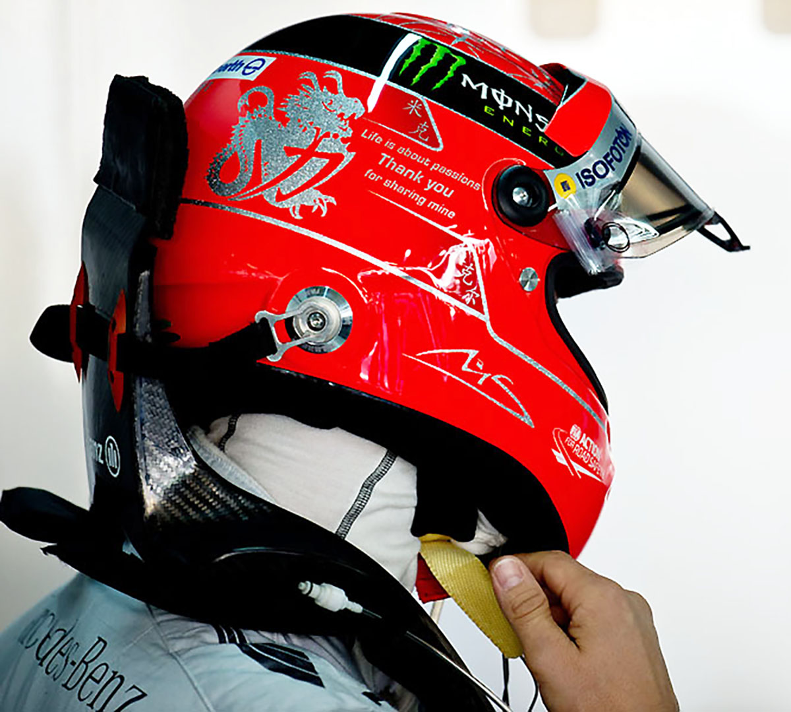
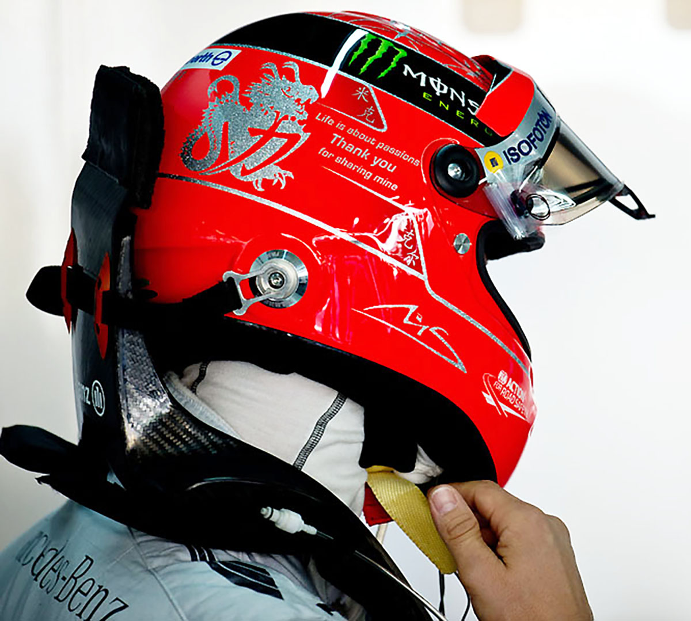
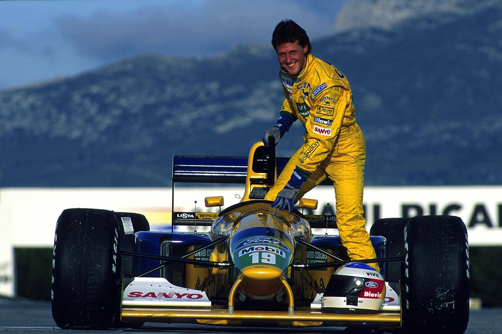
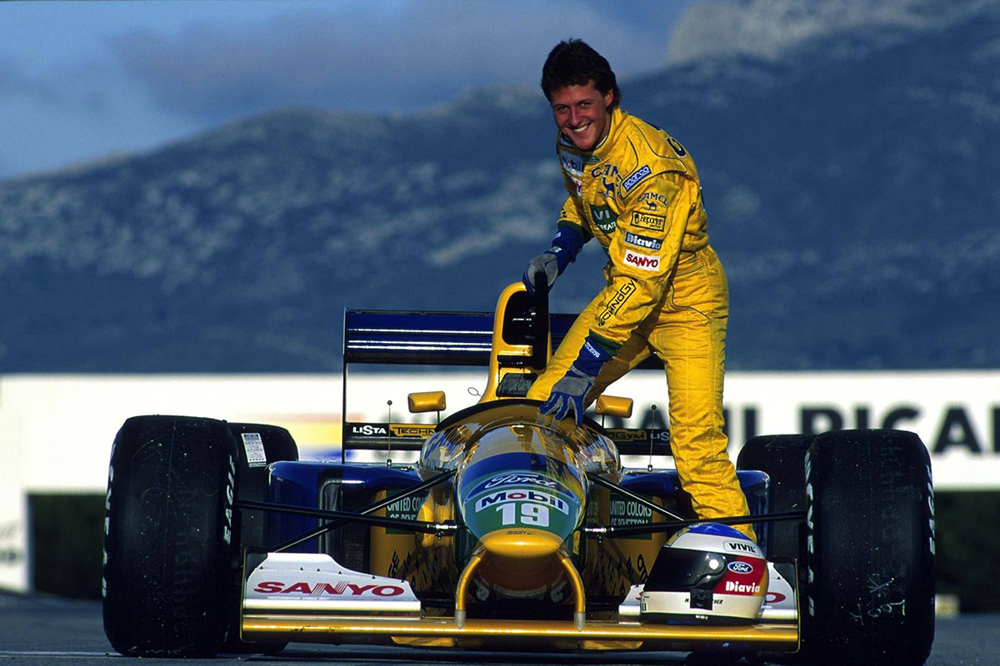

Early life
Michael Schumacher was born in the West German town of Hürth, North Rhine-Westphalia on 3 January 1969, to working-class parents Rolf—a bricklayer who later ran the local kart track—and Elisabeth Schumacher, who operated the track's canteen.
When Schumacher was four, his father modified his pedal kart by adding a small motorcycle engine.
After Michael crashed it into a lamp post in Kerpen, his parents took him to the karting track at Kerpen-Horrem, where he became the youngest member of the karting club.
His father built him a kart from discarded parts and, at the age of six, Schumacher won his first club championship.
To support his son's racing, Rolf took on a second job renting and repairing karts, while his wife worked at the track's canteen.
Nevertheless, when Michael needed a new engine costing 800 DM, his parents were unable to afford it; he was able to continue racing with support from local businessmen.
Regulations in Germany require a driver to be at least 14 years old to obtain a kart license.
To get around this, Schumacher obtained a license in Luxembourg at the age of 12
In 1983, he obtained his German license, a year after he won the German Junior Kart Championship.
Schumacher joined Eurokart dealer Adolf Neubert in 1985 and by 1987, he was the German and European kart champion, then he quit school and began working as a mechanic.
Formula One Career
Schumacher was noted throughout his career for his ability to produce fast laps at crucial moments in a race and to push his car to the very limit for sustained periods.
He was also noted for his pioneering fitness regime and ability to galvanise teams around him.
In 2003, Motor Sport author Christopher Hilton observed that a "measure of a driver's capabilities is his performance in wet races, because the most delicate car control and sensitivity are needed", and noted that like other great drivers, Schumacher's record in wet conditions shows very few mistakes: up to the end of 2003, Schumacher won 17 of the 30 races in wet conditions he contested.
Some of Schumacher's best performances occurred in such conditions, earning him the nicknames "Regenkönig".
He is also known as "the Red Baron", because of his red Ferrari and in reference to the German Manfred von Richthofen, the famous flying ace of the First World War. Schumacher's nicknames also include "Schumi".
Schumacher is often credited with popularising Formula One in Germany, where it was formerly considered a fringe sport.
When Schumacher retired in 2006, three of the top ten drivers in that year's Drivers' standings were German, more than any other nationality. Younger German drivers, such as Sebastian Vettel, felt Schumacher was key in their becoming Formula One drivers.
When Schumacher retired in 2006, three of the top ten drivers in that year's Drivers' standings were German, more than any other nationality. Younger German drivers, such as Sebastian Vettel, felt Schumacher was key in their becoming Formula One drivers.
During a large part of his Formula One career, Schumacher was the president of the Grand Prix Drivers' Association.
In a 2006 FIA survey, he was voted the most popular driver of the season among Formula One fans.
During the same year, Formula One figures such as Niki Lauda and David Coulthard hailed Schumacher as the greatest all-round racing driver in the history of the sport.
In 2020, Schumacher was voted the most influential person in Formula One history.
2013 Skiing Accident
On 29 December 2013, Schumacher was skiing with his then-14-year-old son Mick, descending the Combe de Saulire below the Dent de Burgin above Méribel in the French Alps..
While crossing an unsecured off-piste area between Piste Chamois and Piste Mauduit, he fell and hit his head on a rock, sustaining a serious head injury despite wearing a ski helmet.
According to his physicians, he would most likely have died if he had not been wearing a helmet.
He was airlifted to Grenoble Hospital where he underwent two surgical interventions. Schumacher was put into a medically induced coma because of traumatic brain injury.
By March 2014, there were small encouraging signs, and in early April he was showing moments of consciousness as he was gradually withdrawn from the medically induced coma.
Learn more about Michael Schumacher.
 

 
